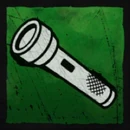
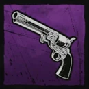
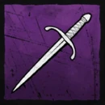
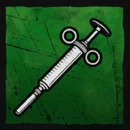
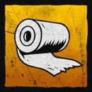
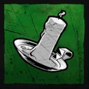
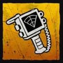

Survivor Equipment Guide
Klik Kanan pada Mouse untuk menggunakan item.

Senter
UTILITYMembutakan Killer selama 2 detik. Gunakan saat Killer mendekat atau sedang memanggul kawan.

Twist of Fate
GAMBLEMenyetrum Killer. 60/40 Chance: Jika gagal, lo bakal kena setrum sendiri!

Dagger
DEFENSESenjata pertahanan jarak dekat. Gunakan Klik Kanan untuk melakukan parry serangan Killer.

Suntikan Adrenalin
BUFFMeningkatkan speed 10% selama 5 detik. Cocok untuk kabur saat stamina habis.

Bandage
HEALINGSembuhkan diri sendiri tanpa bantuan. Hanya 1x penggunaan per game.

Lilin
VISIONMelihat Aura Killer (50m) menembus tembok. Limit: 6x Pakai.

Pendeteksi Killer
RADARBerbunyi otomatis jika Killer berada dalam radius 50m.
The Executioners
THE VEIL
SNIPER / RANGEDSkill Aktif: Menombak
Menyerang survivor dari jarak jauh dengan tombak mematikan.
2x Penggunaan (Cooldown 15 Detik)
Pasif: Wall-Pierce
"Tak ada tempat bersembunyi." Tombak yang dilemparkan dapat menembus tembok/objek padat.
THE SLASHER
BREACHER / STEALTHPengejaran (Passive-Active)
Saat mengejar, tidak perlu tekan [Space] untuk hancurkan palet. Cukup jalan maju dan palet akan hancur otomatis.
Menghilang
Mendapat 80% Speed Boost namun tidak bisa melakukan serangan (Hit) selama mode ini aktif.
THE KILLER
CHAIN-ATTACKERSkill Utama: FRENZY
BUFF
+30% Speed & Fast Vault (Jendela/Palet).
CONDITION
Hit 4 survivor berbeda berturut-turut untuk Insta-Knockdown.
RISK
Hit survivor yang sama 2x akan membatalkan mode Frenzy secara instan.
The Hidden
MOBILITY / TRACKERSkill 1: Mark
Melakukan dash cepat. Jika mengenai survivor, akan memberikan damage dan memperlihatkan Aura selama 3 detik.
Skill 2: Leap
Dash tanpa damage, namun memiliki kemampuan untuk melompati tembok dan jendela jika timing penggunaan pas.
The Stalker
STEALTH / BURSTPassive: No Redlight
Selama skill belum penuh dan belum mencekik, killer ini tidak memiliki Redlight (Lampu merah penanda arah pandang), membuatnya sangat sulit dideteksi.
Evil Grasp Charge Bar
Gunakan Klik Kanan (Stalk) sambil melihat Survivor untuk mengisi bar.
Evil Grasp
Saat bar penuh, killer bisa melakukan animasi mencekik survivor secara instan.
Hunting Mode
Aktif setelah Evil Grasp kena. Mendapat +20% Move Speed dan kemampuan melewati jendela dengan cepat.
The Abyssal Walker
CONTROL / DASHSkill: Black Smoke
Melemparkan asap hitam. Jika kena, Survivor akan terkena efek Slow 50%.
Skill: Dark Severance
Dash cepat ke arah yang ditentukan sambil menebas.
⚠️ Counter Strategy
Gunakan tombol Crouch / Menunduk untuk menghindari tebasan dari Dark Severance secara total!
Game Core & Strategy
SURVIVOR GOAL
Fokus utama lo adalah memperbaiki Generator yang tersebar di map. Sambil benerin gene, lo harus tetap waspada dan lari dari Killer yang terus memburu. Jangan biarkan mereka menangkapmu sebelum gerbang keluar terbuka!
KILLER GOAL
Tugas lo simpel tapi brutal: Cari semua Survivor dan habisi mereka. Pastikan tidak ada satu pun yang lolos dari distrik ini. Gunakan insting dan skill unikmu untuk menutup jalur pelarian mereka selamanya.
PRO TIPS IMPORTANT FUN FACTS
Death Limit: Sebagai Survivor, nyawa lo terbatas. Jika lo digantung (hooked) lebih dari 2 kali, lo otomatis mati dan langsung dipulangkan ke lobby.
Gen-Rush Strategy: Jangan asal benerin gene! Pilihlah generator yang berdekatan untuk diselesaikan duluan. Tujuannya agar saat late game, jarak antar gene yang tersisa berjauhan sehingga rotasi Killer jadi susah.
Pallet Discipline: Cermatlah dalam menggunakan palet. Jangan "waste" palet di awal game untuk area yang tidak terlalu berbahaya. Palet adalah aset paling berharga Survivor untuk *looping*.
Killer's Instinct: Buat para Killer, mata bukan segalanya. Gunakan headphone kalian karena lo bisa mendengar suara langkah kaki (step) Survivor dengan sangat jelas meski mereka tidak terlihat.